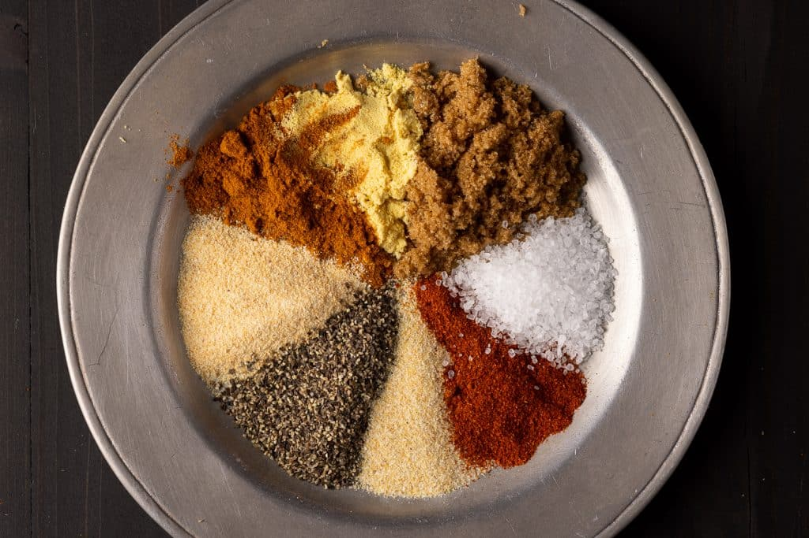

Meat Rub

Introduction
The most imporatant thing to remeber when making a rub is: DON'T! Purchase whatever brand is the cheapest available when you go to the store. What you gain, in flavor or control, by making your own spice rub is lost in the expense of ingredients & of time. With that in mind, what follows is a basic framework to think about when making a rub.
Ingredients
- Sugar
- Salt
- Paprika
- Garlic
- Onion
- Pepper
- Mustard
- Cayenne
- Base
Parts
- Part Sweet
- Part Salt
- Part Savory
- Part Heat
Combinations
- When making your own rub, remember that you'll want to have a ratio of 2 parts sweet or sugar for every 1 part salt.
- The purpose of a rub is to draw water out of the meat using the salt & to replace that water with the sugar/spices in the rub.
- If you want a hotter flavor, increase the heat part, but never more than the sugar part.